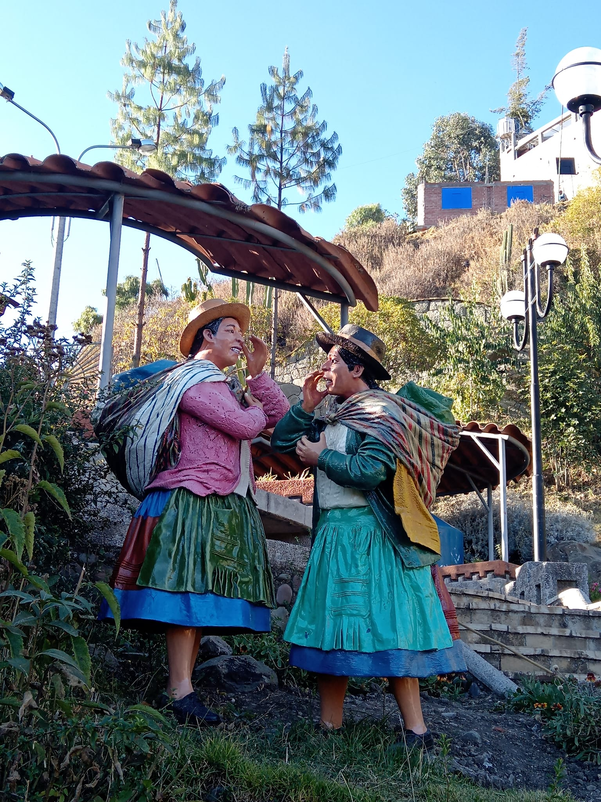
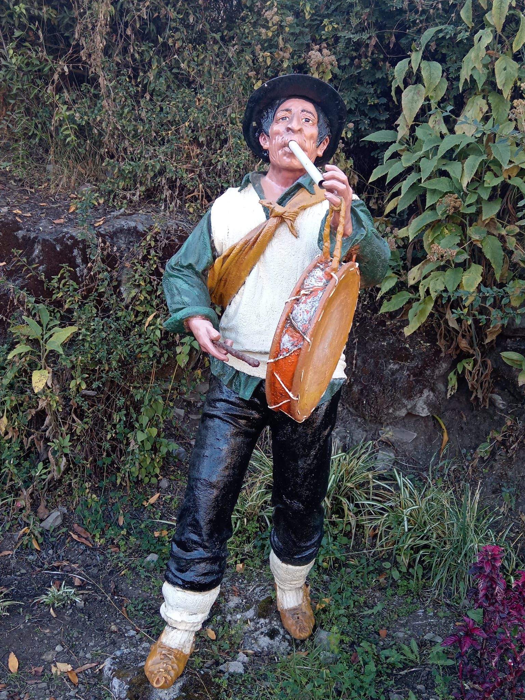
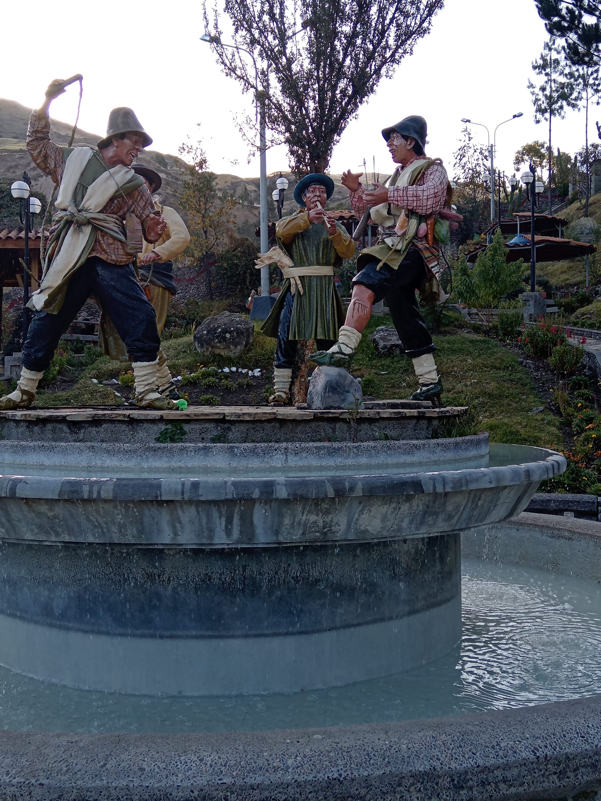
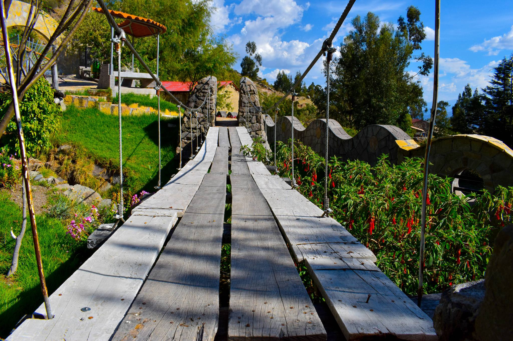
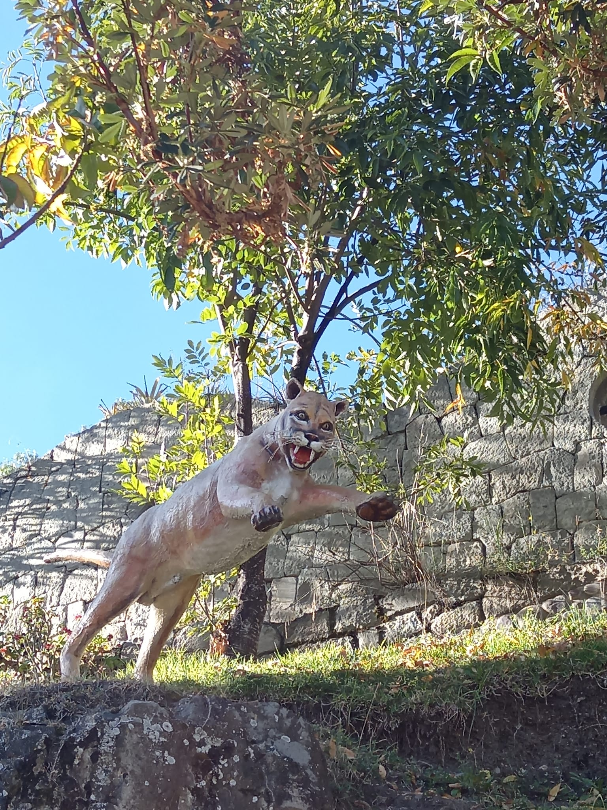
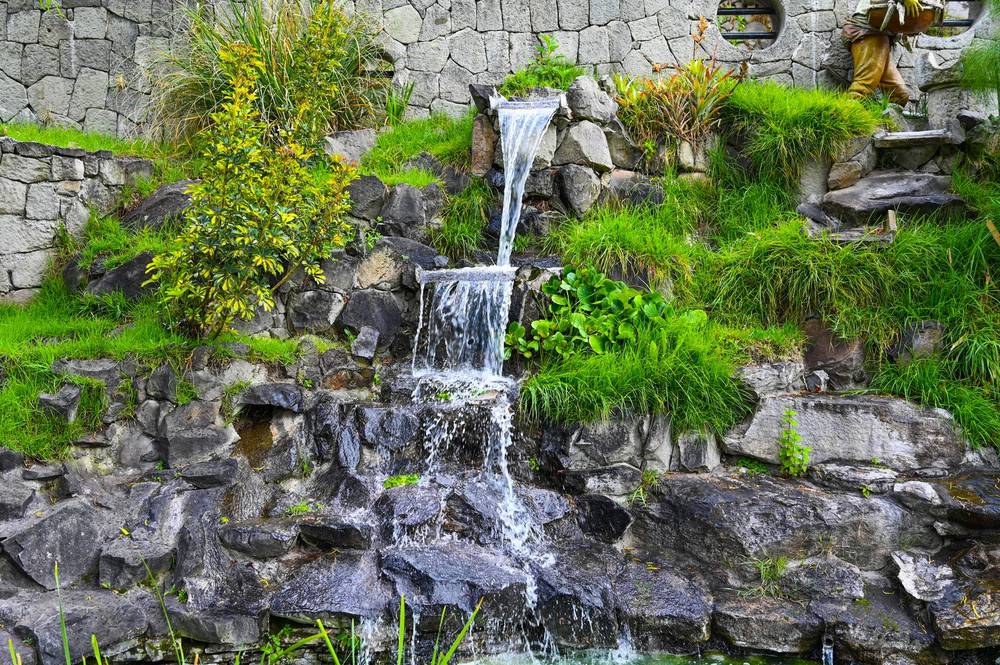
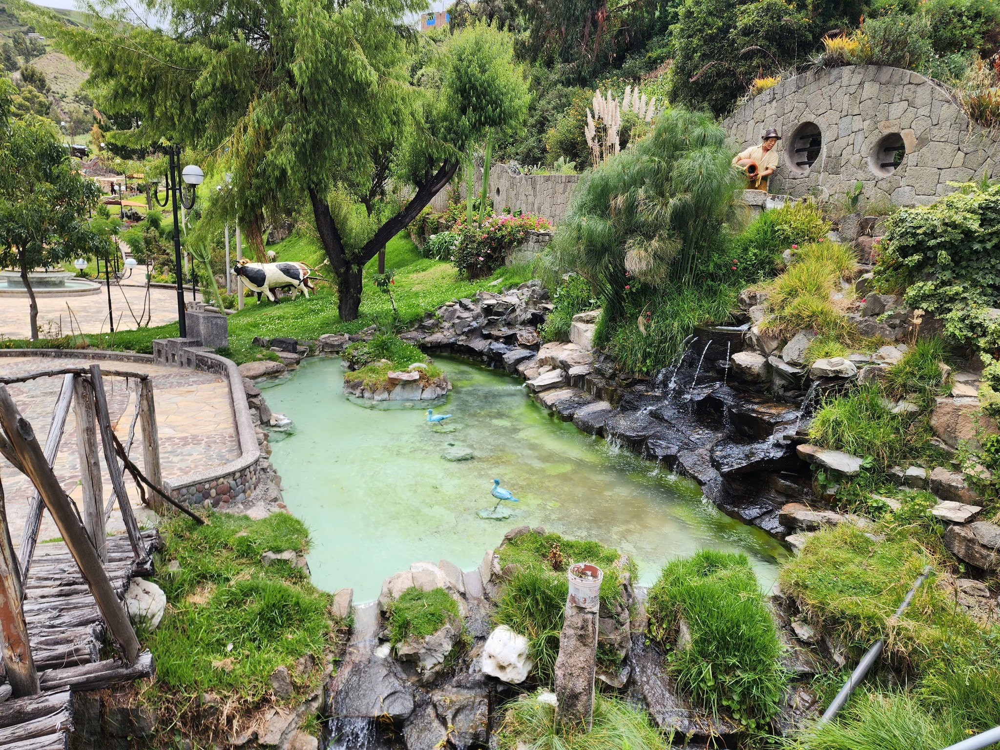

HISTORIA DEL CHORRO
Churcampa es caracterizado por el lugar turístico "EL CHORRO", lugar muy característico de las costumbres de la provincia de Churcampa, al ingreso nos encontramos con la vicuña un camélido que representa a la riqueza animal de nuestra nación. En seguida podemos apreciar el agua subterránea que baja desde el cerro Ccoccomarca y desemboca en el Chorro donde antiguamente sirvió de agua potable para los pobladores Churcampinos. Si avanzamos más allá podemos apreciar la figura del puma que representa al barrio Pumaccasa; al costado observamos un zorro que representa al Barrio Atoccasa de Allí su nombre de Atocc nombre quechua del Zorro andino. Al frente observamos la figura del campesino churcampino que está trabajando con el chaquitaclla acompañado de dos cantantes de harawi y un tinyero; esta forma de trabajo es propia de nuestro antiguo Tawantinsuyo donde el trabajo era una fiesta. Todo ello podemos encontrar en nuestro Ecoturistico de Churcampa.
¡No dejes de Visitar!
Algunas representaciones del Chorro
-

El Churcampino con el chakitaklla
-

El Ccarawi Churcampina
-

El Churcampino con el Pincuyo
-

Representacion al Ccarmencca Chrcampino
-

Puente Chrcampino
-

El puma representa (Barrio Pumaccasa)
-

Pileta de Piedra
- 